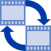
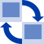

Czym jest WINEASIER?
WINEASIER jest zbiorem małych aplikacji, których celem jest usprawnienie i ułatwienie pracy na komputerze
Stoper
Analizator dysku
 Color Picker
Color PickerKopie zapasowe
Diskeject
Kalendarz
Konwerter filmów
Konwerter muzyki
Konwerter obrazów
Magazyn stron WWW
Minutnik
Notatnik
Przelicznik walut
Screenshot
Sejf haseł
Selektor zdjęć
Stoper
Wyłącznik
Zawsze pod ręką
Dzięki pracy w tle i spersonalizowaniu menu podręcznego wysuwanego z krawędzi ekranu aplikacja umożliwia łatwy dostęp do potrzebnych aplikacji czy danych.
Podziel się swoim ekranem!
Aplikacja Screenshot umożliwi Ci szybkie kadrowanie zrzutu ekranu oraz jego szybką edycję, tak byś mógł pokazać innym nad czym aktualnie pracujesz!
Bądź na bieżąco z kursami walut
Chcesz kupić przedmiot za granicą? Chcesz sprawdzić jego cenę z aktualnym kursem walut? Użyj przelicznika walut z funkcją synchronizacji danych z Narodowym Bankiem Polski!
Nie przegap ważnych wydarzeń
Aplikacja Kalendarz umożliwi Ci zaplanowanie dnia, dodanie przypomnień na konkretny dzień lub godzinę oraz dodanie wydarzeń cyklicznych np. urodziny bliskich Ci osób.
Nie zapomnij zabrać pendrive'a
Aplikacja Diskeject przy próbie wyłączenia komputera powiadomi Cię jeśli w porcie USB komputera będą znajdować się pozostawione dyski zewnętrzne.
Kompaktowy i szybki
Aplikacja zajmuje niecałe 44MB miejsca na dysku komputera, z czego 41MB zajmują kodeki do konwertera muzyki i fimów!